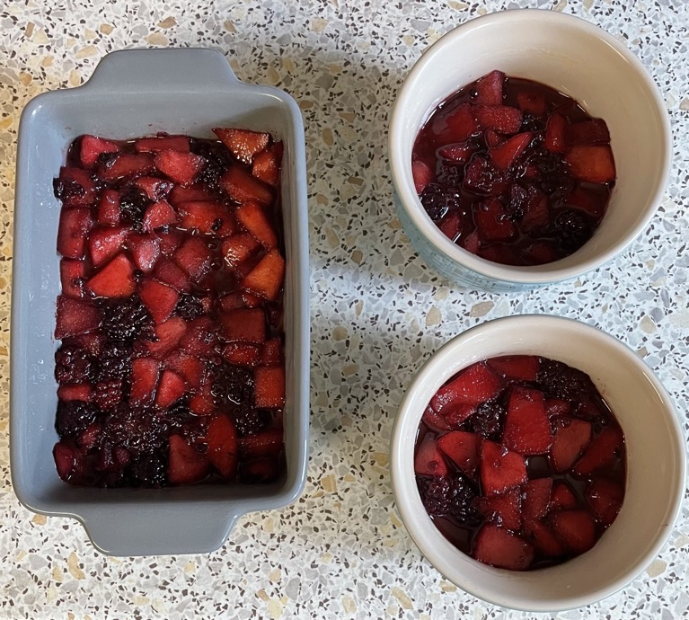
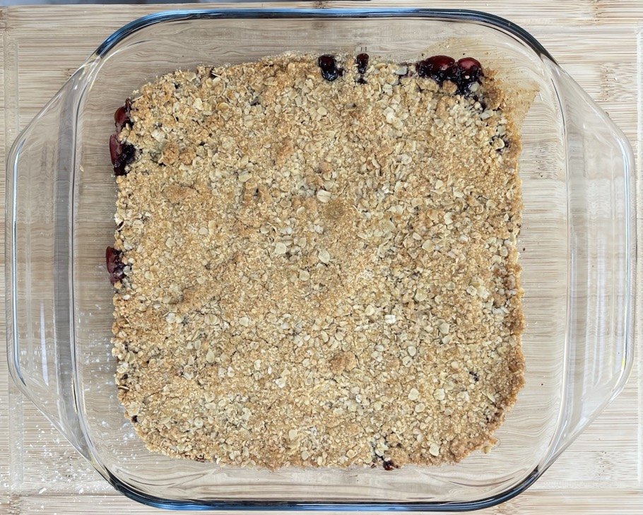

Crumble
Crumble
- Ratios
- 4 portions = 450g fruit : 150g crumble
- Fruit cooked first to remove excess liquid
Topping amounts
- Ratios (total 150g = 4 portions = 35g per portion)
- 55g plain flour
- 35g unsalted butter cubed
- 35g light brown sugar
- 25g oats
- Ratios (1 portion)
- 14g plain flour
- 9g unsalted butter cubed
- 9g light brown sugar
- 6g oats
Topping
- Mix in bowl
- plain flour
- light brown sugar
- unsalted butter cubed
- Blitz in portions until breadcrumbs
- Mix in
- oats
- 1 tsp ginger (optional)
- 1 tsp cinnamon (optional)
Apples & blackberries
- Melt then cook on medium heat for 3 mins
- 30g unsalted butter
- 30g dark brown sugar
- Add and cook for 3 mins
- 300g (after peeling, 3) Braeburn apples peeled & cored, 2cm dice
- Add and cook for 3 mins
- 150g blackberries (apple peeled 2 : 1 blackberry ratio)
- ¼ tsp cinnamon
- Remove heat, cover and leave for 3 mins
- Drain excess liquid
Rhubarb
- Simmer for 10 mins
- 5 sticks rhubarb
- 3 tbsp light brown sugar
- 2 tbsp water
- Drain excess liquid
Cherries & blackberries
- Simmer for 5 mins
- 250g cherries whole, pitted
- 150g blackberries
- 20g light brown sugar
- Drain excess liquid
Cherries & strawberries
- Simmer for 5 mins
- 400g strawberries hulled & halved
- 200g cherries whole, pitted
- 20g light brown sugar
- Drain excess liquid
Crumble
- Put fruit into oven dish / ramekins
- Flatten
- Cover with crumble mix
- Top with
- Cook at 180°C for 30 mins or until topping golden
Notes
Pics

